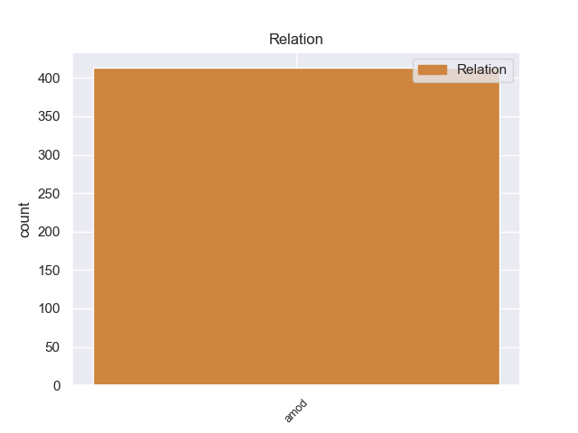
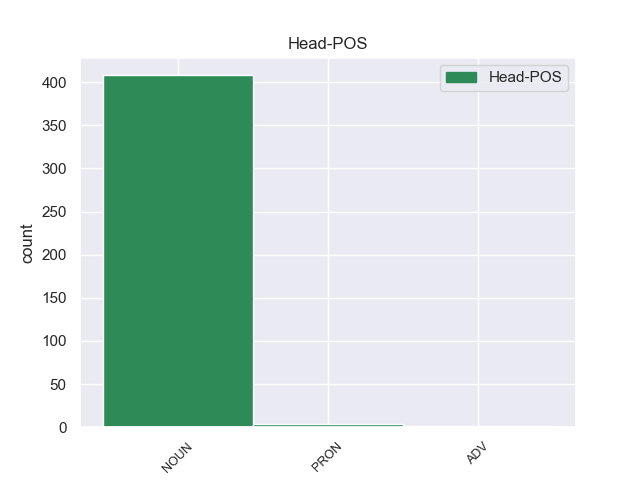
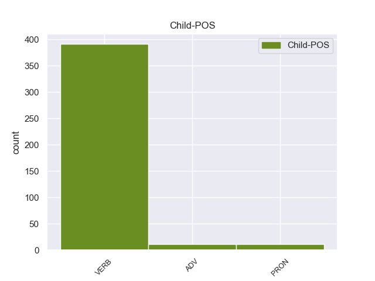

Distribution of features within this leaf



Agreement Rules sorted by frequency.
- When the dependent token is the adjectival modifier(amod) of the head token, and the head token is NOUN and the dependent token is VERB.
1 उनका _ _ _ _ 0 _ _ _
2 कहना _ _ _ _ 0 _ _ _
3 है _ _ _ _ 0 _ _ _
4 कि _ _ _ _ 0 _ _ _
5 छोटे _ _ _ _ 0 _ _ _
6 शहरों _ _ _ _ 0 _ _ _
7 व _ _ _ _ 0 _ _ _
8 गाँवों _ _ _ _ 0 _ _ _
9 में _ _ _ _ 0 _ _ _
10 रहने रह VERB VM Case=Acc|Number=Plur|VerbForm=Inf 12 amod _ ChunkId=VGNN2|ChunkType=head|Tam=nA|Translit=rahane|Vib=ना_वाला
11 वाले _ _ _ _ 0 _ _ _
12 लोगों लोग NOUN NN Case=Acc|Gender=Masc|Number=Plur|Person=3 0 _ _ _
13 को _ _ _ _ 0 _ _ _
14 ट्रेन _ _ _ _ 0 _ _ _
15 के _ _ _ _ 0 _ _ _
16 जरिये _ _ _ _ 0 _ _ _
17 पर्यटन _ _ _ _ 0 _ _ _
18 की _ _ _ _ 0 _ _ _
19 कोई _ _ _ _ 0 _ _ _
20 सुविधा _ _ _ _ 0 _ _ _
21 नहीं _ _ _ _ 0 _ _ _
22 मिलती _ _ _ _ 0 _ _ _
23 । _ _ _ _ 0 _ _ _
1 इसी _ _ _ _ 0 _ _ _
2 तरह _ _ _ _ 0 _ _ _
3 इंडिया _ _ _ _ 0 _ _ _
4 शाइनिंग _ _ _ _ 0 _ _ _
5 अभियान _ _ _ _ 0 _ _ _
6 पर _ _ _ _ 0 _ _ _
7 कैग _ _ _ _ 0 _ _ _
8 ने _ _ _ _ 0 _ _ _
9 अपनी _ _ _ _ 0 _ _ _
10 रिपोर्ट _ _ _ _ 0 _ _ _
11 में _ _ _ _ 0 _ _ _
12 कहा _ _ _ _ 0 _ _ _
13 कि _ _ _ _ 0 _ _ _
14 भारतीय _ _ _ _ 0 _ _ _
15 संविधान _ _ _ _ 0 _ _ _
16 के _ _ _ _ 0 _ _ _
17 अनुसार _ _ _ _ 0 _ _ _
18 बजट _ _ _ _ 0 _ _ _
19 में _ _ _ _ 0 _ _ _
20 दिखाए _ _ _ _ 0 _ _ _
21 गए _ _ _ _ 0 _ _ _
22 खर्च _ _ _ _ 0 _ _ _
23 के _ _ _ _ 0 _ _ _
24 अतिरिक्त _ _ _ _ 0 _ _ _
25 और _ _ _ _ 0 _ _ _
26 किसी कोई PRON PRP Case=Acc|Number=Sing|Person=3|PronType=Prs 27 amod _ ChunkId=NP9|ChunkType=child|Tam=0|Translit=kisī|Vib=0
27 प्रकार प्रकार NOUN NN Case=Acc|Gender=Masc|Number=Sing|Person=3 0 _ _ _
28 का _ _ _ _ 0 _ _ _
29 खर्च _ _ _ _ 0 _ _ _
30 नहीं _ _ _ _ 0 _ _ _
31 किया _ _ _ _ 0 _ _ _
32 जाना _ _ _ _ 0 _ _ _
33 चाहिए _ _ _ _ 0 _ _ _
34 और _ _ _ _ 0 _ _ _
35 यदि _ _ _ _ 0 _ _ _
36 करना _ _ _ _ 0 _ _ _
37 अनिवार्य _ _ _ _ 0 _ _ _
38 हो _ _ _ _ 0 _ _ _
39 तो _ _ _ _ 0 _ _ _
40 अनुपूरक _ _ _ _ 0 _ _ _
41 माँग _ _ _ _ 0 _ _ _
42 के _ _ _ _ 0 _ _ _
43 रूप _ _ _ _ 0 _ _ _
44 में _ _ _ _ 0 _ _ _
45 उसे _ _ _ _ 0 _ _ _
46 संसद _ _ _ _ 0 _ _ _
47 के _ _ _ _ 0 _ _ _
48 समक्ष _ _ _ _ 0 _ _ _
49 अनुमोदन _ _ _ _ 0 _ _ _
50 के _ _ _ _ 0 _ _ _
51 लिए _ _ _ _ 0 _ _ _
52 प्रस्तुत _ _ _ _ 0 _ _ _
53 किया _ _ _ _ 0 _ _ _
54 जाना _ _ _ _ 0 _ _ _
55 चाहिए _ _ _ _ 0 _ _ _
56 । _ _ _ _ 0 _ _ _
1 श्रीकुमार _ _ _ _ 0 _ _ _
2 के _ _ _ _ 0 _ _ _
3 वकील _ _ _ _ 0 _ _ _
4 का _ _ _ _ 0 _ _ _
5 कहना _ _ _ _ 0 _ _ _
6 है _ _ _ _ 0 _ _ _
7 जब _ _ _ _ 0 _ _ _
8 गुजरात _ _ _ _ 0 _ _ _
9 सरकार _ _ _ _ 0 _ _ _
10 ने _ _ _ _ 0 _ _ _
11 पहले पहले ADV NST AdpType=Post|Case=Nom|Gender=Masc|Number=Sing|Person=3 13 amod _ AltTag=ADV-NOUN|ChunkId=NP5|ChunkType=head|Translit=pahale
12 तीन _ _ _ _ 0 _ _ _
13 बार बार NOUN NN Case=Nom|Gender=Fem|Number=Plur|Person=3 0 _ _ _
14 पदोन्नत _ _ _ _ 0 _ _ _
15 करते _ _ _ _ 0 _ _ _
16 समय _ _ _ _ 0 _ _ _
17 लंबित _ _ _ _ 0 _ _ _
18 आपराधिक _ _ _ _ 0 _ _ _
19 मामले _ _ _ _ 0 _ _ _
20 पर _ _ _ _ 0 _ _ _
21 विचार _ _ _ _ 0 _ _ _
22 नहीं _ _ _ _ 0 _ _ _
23 किया _ _ _ _ 0 _ _ _
24 , _ _ _ _ 0 _ _ _
25 तो _ _ _ _ 0 _ _ _
26 इस _ _ _ _ 0 _ _ _
27 बार _ _ _ _ 0 _ _ _
28 यह _ _ _ _ 0 _ _ _
29 मामला _ _ _ _ 0 _ _ _
30 इतना _ _ _ _ 0 _ _ _
31 महत्वपूर्ण _ _ _ _ 0 _ _ _
32 क्यों _ _ _ _ 0 _ _ _
33 माना _ _ _ _ 0 _ _ _
34 जा _ _ _ _ 0 _ _ _
35 रहा _ _ _ _ 0 _ _ _
36 है _ _ _ _ 0 _ _ _
37 । _ _ _ _ 0 _ _ _
Disagree Examples:
1 यहाँ _ _ _ _ 0 _ _ _
2 लगने लग VERB VM Case=Acc|Number=Sing|VerbForm=Inf 7 amod _ ChunkId=VGNN|ChunkType=head|Tam=nA|Translit=lagane|Vib=ना_वाला
3 वाला _ _ _ _ 0 _ _ _
4 तीन _ _ _ _ 0 _ _ _
5 दिन _ _ _ _ 0 _ _ _
6 का _ _ _ _ 0 _ _ _
7 इज्तिमा इज्तिमा NOUN NN Case=Nom|Gender=Masc|Number=Sing|Person=3 0 _ _ _
8 पूरे _ _ _ _ 0 _ _ _
9 देश _ _ _ _ 0 _ _ _
10 के _ _ _ _ 0 _ _ _
11 लोगों _ _ _ _ 0 _ _ _
12 को _ _ _ _ 0 _ _ _
13 आमंत्रित _ _ _ _ 0 _ _ _
14 करता _ _ _ _ 0 _ _ _
15 है _ _ _ _ 0 _ _ _
16 । _ _ _ _ 0 _ _ _
1 मुंबई _ _ _ _ 0 _ _ _
2 से _ _ _ _ 0 _ _ _
3 इटारसी _ _ _ _ 0 _ _ _
4 और _ _ _ _ 0 _ _ _
5 झाँसी _ _ _ _ 0 _ _ _
6 के _ _ _ _ 0 _ _ _
7 रास्ते _ _ _ _ 0 _ _ _
8 दिल्ली _ _ _ _ 0 _ _ _
9 जाने जा VERB VM Case=Acc|Number=Plur|VerbForm=Inf 12 amod _ ChunkId=VGNN|ChunkType=head|Tam=nA|Translit=jāne|Vib=ना_वाला
10 वाली _ _ _ _ 0 _ _ _
11 मुख्य _ _ _ _ 0 _ _ _
12 गाड़ियाँ गाड़ी NOUN NN Case=Nom|Gender=Fem|Number=Plur|Person=3 0 _ _ _
13 भोपाल _ _ _ _ 0 _ _ _
14 होकर _ _ _ _ 0 _ _ _
15 जाती _ _ _ _ 0 _ _ _
16 हैं _ _ _ _ 0 _ _ _
17 । _ _ _ _ 0 _ _ _
1 इसके _ _ _ _ 0 _ _ _
2 अलावा _ _ _ _ 0 _ _ _
3 यहाँ _ _ _ _ 0 _ _ _
4 हर _ _ _ _ 0 _ _ _
5 रात _ _ _ _ 0 _ _ _
6 होने हो VERB VM Case=Acc|Number=Sing|VerbForm=Inf 10 amod _ ChunkId=VGNN|ChunkType=head|Tam=nA|Translit=hone|Vib=ना_वाला
7 वाला _ _ _ _ 0 _ _ _
8 फायर _ _ _ _ 0 _ _ _
9 वर्क्स _ _ _ _ 0 _ _ _
10 शो शो NOUN NN Case=Nom|Gender=Masc|Number=Sing|Person=3 0 _ _ _
11 बच्चों _ _ _ _ 0 _ _ _
12 को _ _ _ _ 0 _ _ _
13 काफी _ _ _ _ 0 _ _ _
14 पसंद _ _ _ _ 0 _ _ _
15 आता _ _ _ _ 0 _ _ _
16 है _ _ _ _ 0 _ _ _
17 । _ _ _ _ 0 _ _ _
1 हर _ _ _ _ 0 _ _ _
2 मौसम _ _ _ _ 0 _ _ _
3 में _ _ _ _ 0 _ _ _
4 हजारों _ _ _ _ 0 _ _ _
5 की _ _ _ _ 0 _ _ _
6 तादाद _ _ _ _ 0 _ _ _
7 में _ _ _ _ 0 _ _ _
8 यहाँ _ _ _ _ 0 _ _ _
9 पहुँचने पहुँच VERB VM Case=Acc|Number=Plur|VerbForm=Inf 11 amod _ ChunkId=VGNN|ChunkType=head|Tam=nA|Translit=pahum̃cane|Vib=ना_वाला
10 वाले _ _ _ _ 0 _ _ _
11 सैलानी सैलानी NOUN NN Case=Nom|Gender=Masc|Number=Plur|Person=3 0 _ _ _
12 इसकी _ _ _ _ 0 _ _ _
13 खूबसूरती _ _ _ _ 0 _ _ _
14 को _ _ _ _ 0 _ _ _
15 अपने _ _ _ _ 0 _ _ _
16 अंदर _ _ _ _ 0 _ _ _
17 जज्ब _ _ _ _ 0 _ _ _
18 कर _ _ _ _ 0 _ _ _
19 लेना _ _ _ _ 0 _ _ _
20 चाहते _ _ _ _ 0 _ _ _
21 हैं _ _ _ _ 0 _ _ _
22 . _ _ _ _ 0 _ _ _
1 इसके _ _ _ _ 0 _ _ _
2 अलावा _ _ _ _ 0 _ _ _
3 बैठने _ _ _ _ 0 _ _ _
4 की _ _ _ _ 0 _ _ _
5 अच्छी _ _ _ _ 0 _ _ _
6 व्यवस्था _ _ _ _ 0 _ _ _
7 तथा _ _ _ _ 0 _ _ _
8 पूजा _ _ _ _ 0 _ _ _
9 करने कर VERB VM Case=Acc|VerbForm=Inf 15 amod _ ChunkId=VGNN2|ChunkType=head|Tam=nA|Translit=karane|Vib=ना_के_लिए
10 के _ _ _ _ 0 _ _ _
11 लिए _ _ _ _ 0 _ _ _
12 भी _ _ _ _ 0 _ _ _
13 काफी _ _ _ _ 0 _ _ _
14 बड़े _ _ _ _ 0 _ _ _
15 स्थान स्थान NOUN NN Case=Nom|Gender=Masc|Number=Plur|Person=3 0 _ _ _
16 नजर _ _ _ _ 0 _ _ _
17 आए _ _ _ _ 0 _ _ _
18 । _ _ _ _ 0 _ _ _